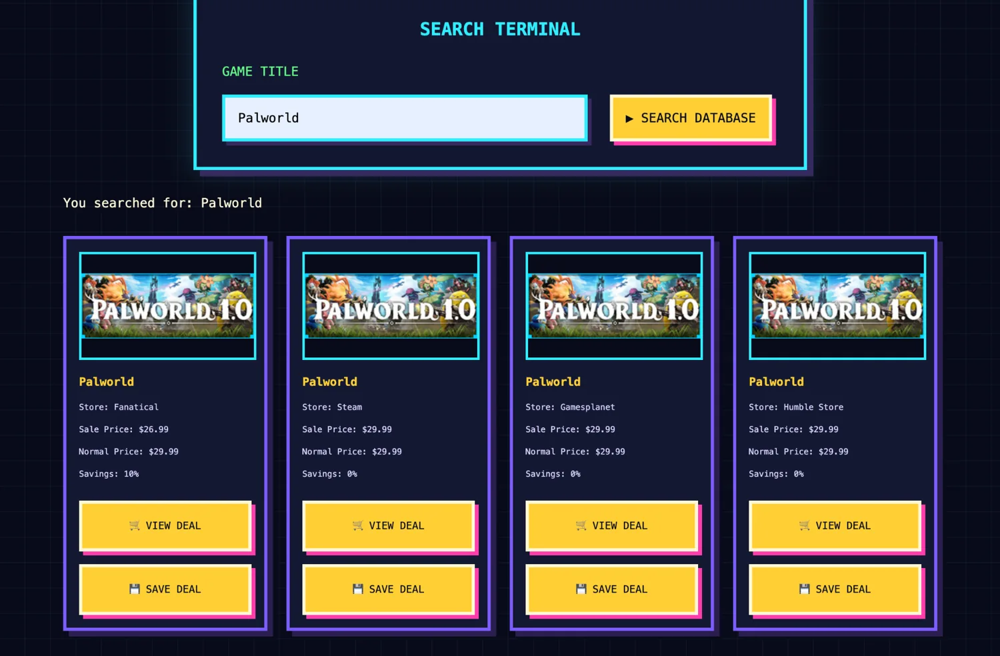
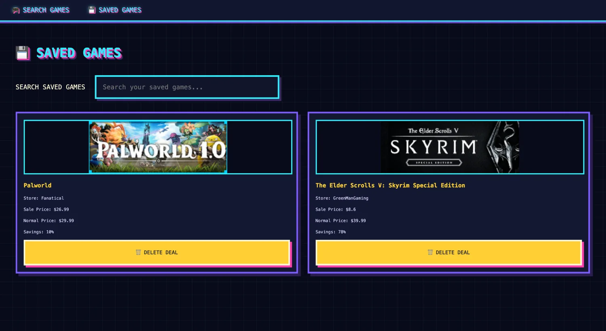

01
LIVE · FULL-STACK APPLICATION
Game Deal Finder
Search video game deals, compare retailer prices, and save favorites for later. This project combines an external pricing API with persistent data storage and cloud deployment.
- CheapShark API integration and search results
- Saved deals stored and managed with Supabase
- Flask backend and React frontend deployed online
React
Flask
Supabase
REST API
AWS CloudFront
Render

